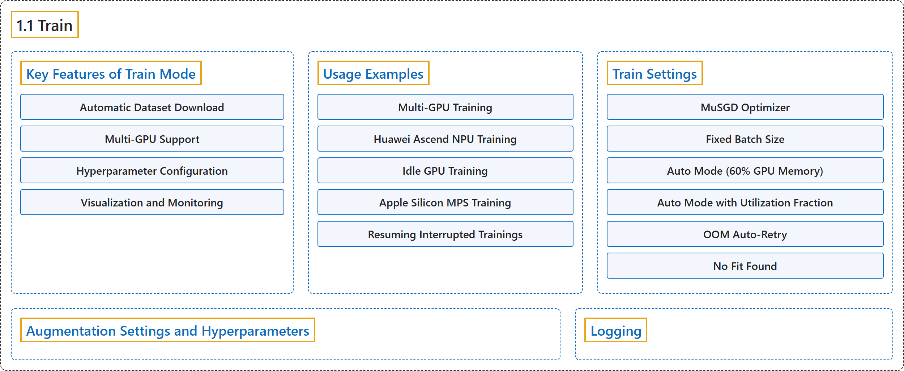

1.1 Train
Classification

Glossary
| Term | Definition | 中文翻译 | Source |
|---|---|---|---|
| 1.1 Train 训练 |
"Training a deep learning model involves feeding it data and adjusting its parameters so that it can make accurate predictions." | 训练深度学习模型就是给它输入数据并调整其参数，使它能做出准确的预测。 | Ultralytics, n.d., "Model Training with Ultralytics YOLO", para. 1 |
| Key Features of Train Mode 训练模式的主要功能 |
(context) "The following are some notable features of YOLO26's Train mode:" | （语境）以下是 YOLO26 训练模式的一些主要功能： | Ultralytics, n.d., "Key Features of Train Mode", para. 1 |
| Automatic Dataset Download 自动下载数据集 |
"Automatic Dataset Download: Dataset configurations with a download source are downloaded automatically on first use" | 自动下载数据集：带有下载来源的数据集配置会在首次使用时自动下载 | Ultralytics, n.d., "Key Features of Train Mode", item 1 |
| Multi-GPU Support 多 GPU 支持 |
"Multi-GPU Support: Scale your training efforts seamlessly across multiple GPUs to expedite the process." | 多 GPU 支持：把训练无缝扩展到多块 GPU 上，以加快过程。 | Ultralytics, n.d., "Key Features of Train Mode", item 2 |
| Hyperparameter Configuration 超参数配置 |
"Hyperparameter Configuration: The option to modify hyperparameters through YAML configuration files or CLI arguments." | 超参数配置：可以通过 YAML 配置文件或命令行参数修改超参数。 | Ultralytics, n.d., "Key Features of Train Mode", item 3 |
| Visualization and Monitoring 可视化与监控 |
"Visualization and Monitoring: Real-time tracking of training metrics and visualization of the learning process for better insights." | 可视化与监控：实时跟踪训练指标并可视化学习过程，以便更好地洞察。 | Ultralytics, n.d., "Key Features of Train Mode", item 4 |
| Usage Examples 使用示例 |
(No definition) | （无定义） | Ultralytics, n.d., "Usage Examples" |
| Multi-GPU Training 多 GPU 训练 |
"Multi-GPU training allows for more efficient utilization of available hardware resources by distributing the training load across multiple GPUs." | 多 GPU 训练把训练负载分布到多块 GPU 上，从而更高效地利用可用的硬件资源。 | Ultralytics, n.d., "Multi-GPU Training", para. 1 |
| Huawei Ascend NPU Training 华为昇腾 NPU 训练 |
(context) "Ultralytics supports training and validation on Huawei Ascend NPUs through torch_npu." | （语境）Ultralytics 支持通过 torch_npu 在华为昇腾 NPU 上训练和验证。 | Ultralytics, n.d., "Huawei Ascend NPU Training", para. 1 |
| Idle GPU Training 空闲 GPU 训练 |
"Idle GPU Training enables automatic selection of the least utilized GPUs in multi-GPU systems, optimizing resource usage without manual GPU selection." | 空闲 GPU 训练能在多 GPU 系统中自动选择利用率最低的 GPU，无需手动选择 GPU 即可优化资源使用。 | Ultralytics, n.d., "Idle GPU Training", para. 1 |
| Apple Silicon MPS Training Apple 芯片 MPS 训练 |
(context) "The MPS offers a high-performance way of executing computation and image processing tasks on Apple's custom silicon." | （语境）MPS 提供了在 Apple 自研芯片上执行计算和图像处理任务的高性能方式。 | Ultralytics, n.d., "Apple Silicon MPS Training", para. 1 |
| Resuming Interrupted Trainings 恢复中断的训练 |
"Resuming training from a previously saved state is a crucial feature when working with deep learning models." | 从先前保存的状态恢复训练是使用深度学习模型时的一项关键功能。 | Ultralytics, n.d., "Resuming Interrupted Trainings", para. 1 |
| Train Settings 训练设置 |
"The training settings for YOLO models encompass various hyperparameters and configurations used during the training process." | YOLO 模型的训练设置包括训练过程中使用的各种超参数和配置。 | Ultralytics, n.d., "Train Settings", para. 1 |
| MuSGD Optimizer MuSGD 优化器 |
"In YOLO26, MuSGD is a hybrid optimizer that combines standard SGD updates with Muon-style orthogonalized updates." | 在 YOLO26 中，MuSGD 是一种混合优化器，把标准 SGD 更新与 Muon 风格的正交化更新结合起来。 | Ultralytics, n.d., "MuSGD Optimizer", para. 1 |
| Fixed Batch Size 固定批大小 |
"Fixed Batch Size: Set an integer value (e.g., batch=16), specifying the number of images per batch directly." |
固定批大小：设置一个整数值（例如 batch=16），直接指定每批的图像数量。 |
Ultralytics, n.d., "Train Settings", Note on Batch-size Settings, item 1 |
| Auto Mode (60% GPU Memory) 自动模式（60% GPU 显存） |
"Auto Mode (60% GPU Memory): Use batch=-1 to automatically adjust batch size for approximately 60% of the CUDA memory available to training." |
自动模式（60% GPU 显存）：使用 batch=-1，自动调整批大小，使其占用训练可用 CUDA 显存的约 60%。 |
Ultralytics, n.d., "Train Settings", Note on Batch-size Settings, item 2 |
| Auto Mode with Utilization Fraction 按利用率比例的自动模式 |
"Auto Mode with Utilization Fraction: Set a fraction value (e.g., batch=0.70) to adjust batch size based on the specified fraction of available GPU memory." |
按利用率比例的自动模式：设置一个比例值（例如 batch=0.70），按可用 GPU 显存的指定比例调整批大小。 |
Ultralytics, n.d., "Train Settings", Note on Batch-size Settings, item 3 |
| OOM Auto-Retry 显存溢出自动重试 |
"OOM Auto-Retry: If a CUDA out-of-memory error occurs during the first epoch, the trainer automatically halves the batch size and retries (up to 3 times)." | 显存溢出自动重试：如果第一个轮次中发生 CUDA 显存溢出错误，训练器会自动把批大小减半并重试（最多 3 次）。 | Ultralytics, n.d., "Train Settings", Note on Batch-size Settings, item 4 |
| No Fit Found 找不到合适值 |
"No Fit Found: If no candidate batch size produces a usable profile, AutoBatch raises a clear RuntimeError instead of silently falling back to an unrelated default." |
找不到合适值：如果没有任何候选批大小能得到可用的分析结果，AutoBatch 会抛出明确的 RuntimeError，而不是悄悄退回到一个无关的默认值。 |
Ultralytics, n.d., "Train Settings", Note on Batch-size Settings, item 5 |
| Augmentation Settings and Hyperparameters 增强设置与超参数 |
"Augmentation techniques are essential for improving the robustness and performance of YOLO models by introducing variability into the training data, helping the model generalize better to unseen data." | 增强技术对于通过给训练数据引入变化来提升 YOLO 模型的鲁棒性和性能至关重要，能帮助模型更好地泛化到未见过的数据。 | Ultralytics, n.d., "Augmentation Settings and Hyperparameters", para. 1 |
| Logging 日志记录 |
(context) "Training metrics, plots, and checkpoints are always written to the run directory, and Ultralytics also streams them to any experiment tracker you have installed and enabled" | （语境）训练指标、图表和检查点总会写入运行目录，Ultralytics 还会把它们推送到你已安装并启用的任何实验跟踪工具 | Ultralytics, n.d., "Logging", para. 1 |
References
Ultralytics. (n.d.). Model Training with Ultralytics YOLO. Ultralytics YOLO Docs (ultralytics 8.4.194). Retrieved October 31, 2026, from https://docs.ultralytics.com/modes/train/